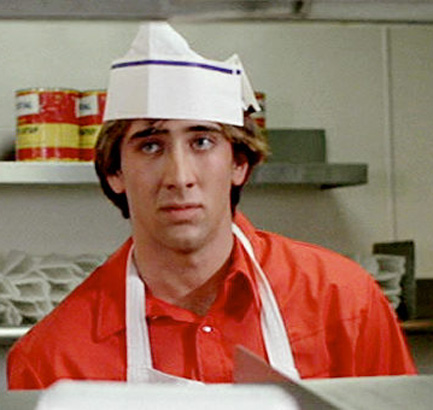
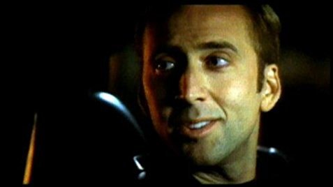
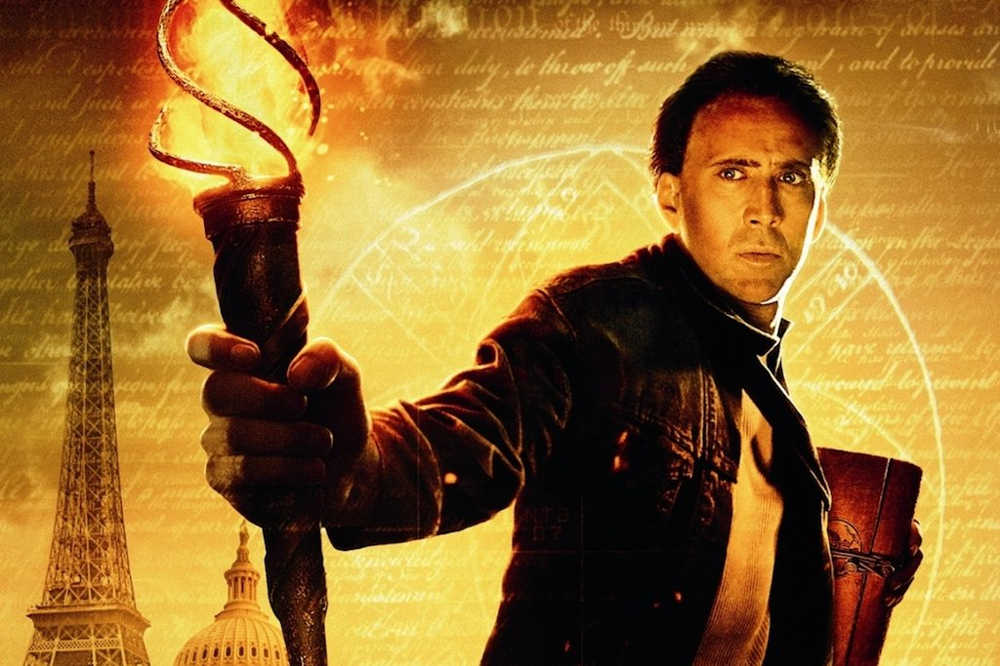
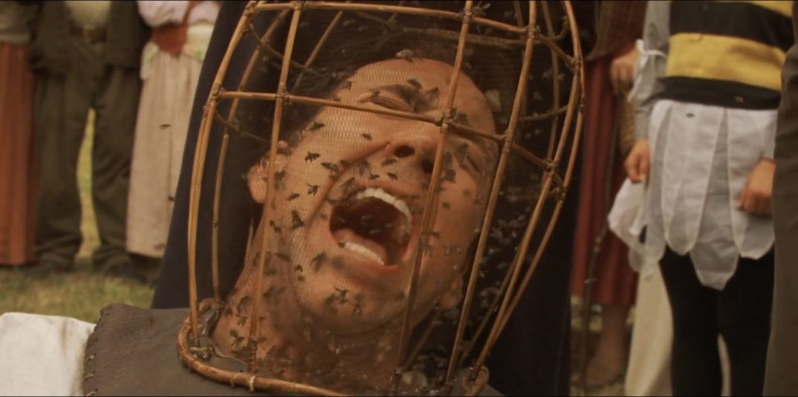
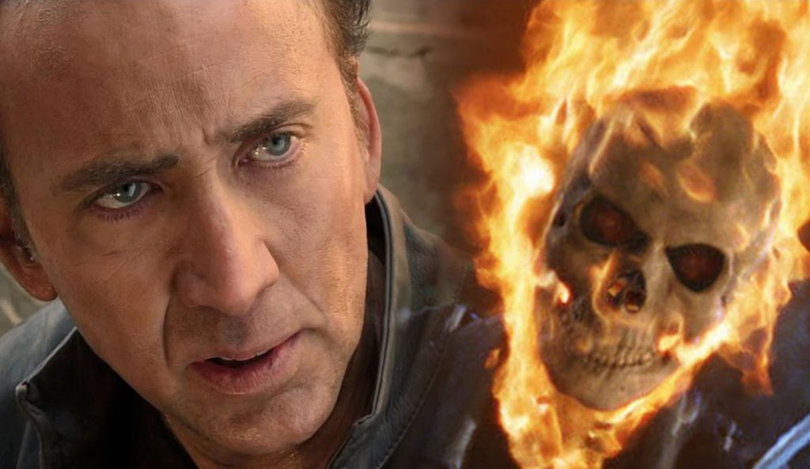
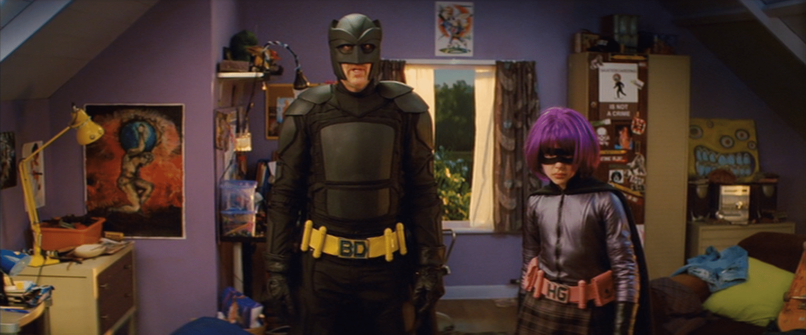
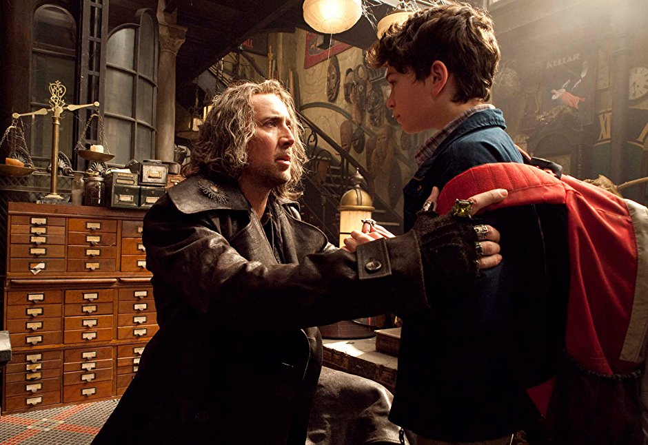
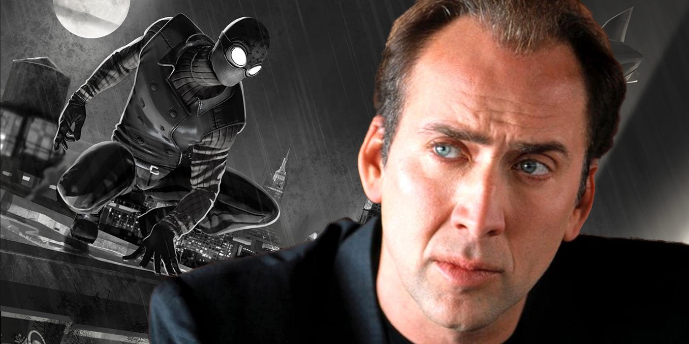

Fast Times at Ridgemont High (1982)
Alrighty, first big time movie for the Cagester. Back then he wasn't quite the Cagester yet though. Nicolas Kim Coppola played the well known role of "Brad's Bud". We all have to start somewhere. After landing such a groundbreaking role, Nic understandably decided the next course of action was to change his name in anticipation of stardom. And thus Nicolas Cage was born.
Valley Girl (1983)
The dude's already got a lead role just one year after breaking in to the scene. What a guy. This was the first time Cage got to be front and center, freely displaying those large eyebrows that make it look like he's always tired.
Face/Off (1997)
Ok, so while I was making this list I was just scrolling through IMDb and scanning through some of the movies. But dude, this one sounds real neat. Basically, the Nicster goes undercover as a Terrorist to uncover some plot or something. But the Terrorist he's impersonating ALSO is undercover as Cage Man. Like woah. That actually sounds pretty neat. I've heard ABOUT this movie but I've never seen it. That is on my to do list now. Nicci Minaj really is the gift that keeps on giving.
Oh wow THIS is the movie that came from.
Gone in Sixty Seconds (2000)
Dude this one sounds cool too. I'll be honest, I haven't seen a TON of Nic Cage movies but dude I just might change that after finishing this page. Like what a plot.
National Treasure (2004)
This. Was. The. MOVIE. The Nicolas Cage classic that millenials can relate to. His greatest work and quite possibly the greatest piece of film to ever grace the theatres. Move aside, Infinity War. Get outta here, Interstellar. I'm gonna steal the Declaration of Independence.
The Wicker Man (2006)
Bees.
Ghost Rider (2007)
Nicolas Cage is technically in the MCU.
Kick-Ass (2010)
Alright, lets skip ahead a few years. A sequel to National Treasure (with another one coming), G-Force (The one about guinea pigs), and lots more. Kick-Ass the movie. Super Nic is basically Batman in this movie. I'm not gonna spoil anything else. If you like Batman and you like Nic, watch it.
The Sorcerer's Apprentice (2010)
The guys only 46 and already playing the role of old wise man. I don't entirely remember all of this movie from the last time I saw it but it was neato.
Into the Spider-Verse (2018)
About another 8 years of lots of movies and we come to today. He's apparently playing Neo Spiderman in this new movie coming out, so that'll be cool.
